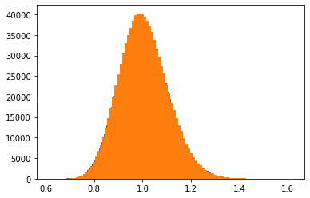
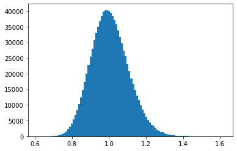

Contents
import arviz as az
import numpy as np
import pandas as pd
import pymc as pm
from pymc import invprobit
from pymc.math import exp
import matplotlib.pyplot as plt
x = np.array([0, 0, 2.5, 2.5, 5, 5, 7.5, 7.5, 10, 10, 12.5, 12.5, 20, 25, 25])
y = np.array([123, 123, 46, 48, 8, 11, 8, 7, 7, 2, 5, 1, 2, 0, 0])
data = pd.read_csv("nanowire.csv")
data
data.y.to_numpy() == y
array([ True, True, True, True, True, True, True, True, True,
True, True, True, True, True, True])
with pm.Model() as m:
x_data = pm.MutableData("x", x)
θ_1_ = pm.Normal("θ_1_", 0, tau=.1)
θ_3_ = pm.Normal("θ_3_", 0, tau=.1)
θ_4_ = pm.Normal("θ_4_", 0, tau=.1)
θ_1 = pm.Deterministic("θ_1", exp(θ_1_))
θ_2 = pm.Uniform("θ_2", 0, 1)
θ_3 = pm.Deterministic("θ_3", exp(θ_3_))
θ_4 = pm.Deterministic("θ_4", exp(θ_4_))
μ = θ_1 * exp(-θ_2 * x_data**2) + θ_3 * (1 - exp(-θ_2 * x_data**2)) * invprobit(
-x_data / θ_4
)
lik = pm.Poisson("likelihood", mu=μ, observed=y)
trace = pm.sample(10000)
Multiprocess sampling (4 chains in 4 jobs)
NUTS: [θ_1_, θ_3_, θ_4_, θ_2]
100.00% [44000/44000 00:07<00:00 Sampling 4 chains, 5 divergences]
/Users/aaron/mambaforge/envs/pymc-dev-py39/lib/python3.9/site-packages/scipy/stats/_continuous_distns.py:624: RuntimeWarning: overflow encountered in _beta_ppf
return _boost._beta_ppf(q, a, b)
/Users/aaron/mambaforge/envs/pymc-dev-py39/lib/python3.9/site-packages/scipy/stats/_continuous_distns.py:624: RuntimeWarning: overflow encountered in _beta_ppf
return _boost._beta_ppf(q, a, b)
/Users/aaron/mambaforge/envs/pymc-dev-py39/lib/python3.9/site-packages/scipy/stats/_continuous_distns.py:624: RuntimeWarning: overflow encountered in _beta_ppf
return _boost._beta_ppf(q, a, b)
/Users/aaron/mambaforge/envs/pymc-dev-py39/lib/python3.9/site-packages/scipy/stats/_continuous_distns.py:624: RuntimeWarning: overflow encountered in _beta_ppf
return _boost._beta_ppf(q, a, b)
Sampling 4 chains for 1_000 tune and 10_000 draw iterations (4_000 + 40_000 draws total) took 15 seconds.
The acceptance probability does not match the target. It is 0.8874, but should be close to 0.8. Try to increase the number of tuning steps.
There were 5 divergences after tuning. Increase `target_accept` or reparameterize.
az.summary(trace, hdi_prob=0.95, var_names=["~θ_1_", "~θ_3_", "~θ_4_"], kind="stats")
| mean | sd | hdi_2.5% | hdi_97.5% | |
|---|---|---|---|---|
| θ_2 | 0.185 | 0.027 | 0.133 | 0.238 |
| θ_1 | 122.893 | 7.872 | 107.915 | 138.567 |
| θ_3 | 27.002 | 7.698 | 12.867 | 42.276 |
| θ_4 | 11.839 | 13.050 | 7.353 | 16.689 |
new_obs = np.array([2.0])
pm.set_data({"x": new_obs}, model=m)
ppc = pm.sample_posterior_predictive(trace, model=m)
az.summary(ppc, hdi_prob=.95)
100.00% [40000/40000 00:01<00:00]
/Users/aaron/mambaforge/envs/pymc-dev-py39/lib/python3.9/site-packages/arviz/stats/stats.py:1180: UserWarning: Selecting first found group: posterior_predictive
warnings.warn(f"Selecting first found group: {data.groups()[0]}")
| mean | sd | hdi_2.5% | hdi_97.5% | mcse_mean | mcse_sd | ess_bulk | ess_tail | r_hat | |
|---|---|---|---|---|---|---|---|---|---|
| likelihood[0] | 64.937 | 9.322 | 46.0 | 82.0 | 0.048 | 0.034 | 38183.0 | 38290.0 | 1.0 |
test = pm.draw(pm.LogNormal.dist(0, .1), 1000000)
test2 = np.exp(pm.draw(pm.Normal.dist(0, .1), 1000000))
az.plot_posterior(test)
az.plot_posterior(test2)
<AxesSubplot:title={'center':'x'}>
plt.hist(test, bins=100)
plt.hist(test2, bins=100)
plt.show()

plt.show()

1/100
0.01
100**-2
0.0001